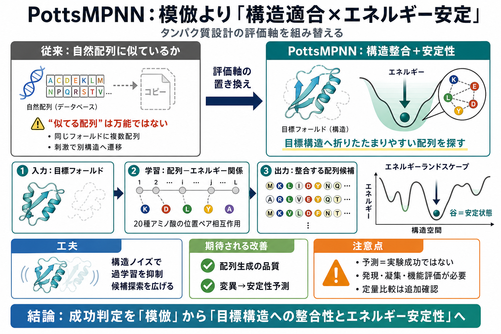

Looking beyond natural sequences | MIT News | Massachusetts Institute of Technology
Birnbaum acknowledges that in trying to shift away from adhering to native sequences, incorporating evolutionary informa…

自然配列との“似てさ”より、目標構造への整合性とエネルギー安定性を軸にする考え方を、記事要約ベースで整理します。
配列の違いが安定性や取り得る構造を左右し、安定な状態が“谷”として現れる—という見方が評価の中心になります。
記事の核心は、タンパク質設計を“自然配列の再現”ではなく、配列—エネルギー—構造の関係を学んで目標フォールド整合を探索する問題として捉え直す点です。
PottsMPNNは、タンパク質中の位置ペアについて 20種類すべてのアミノ酸組み合わせ（pairwise interactions）を表現し、エネルギーランドスケープ近似を精緻化します。
訓練時に構造変動（ノイズ）を意図的に加えることで、自然配列の直接模倣に過剰に引っ張られることを抑え、設計空間を広げる狙いがあります。
報告では、配列生成の品質、変異（ミューテーション）が安定性へ与える影響の予測で改善が示され、新規タンパク質にも有望とされています。
進化的に近縁な配列セットも学習に使う要素が残るため、“完全に生物学的記録から独立”とは言い切れません。
PottsMPNNの違いは、成功を“自然配列に似ているか”ではなく、目標構造への整合性とエネルギー安定性で測ろうとする点です。
計算の精度向上は重要ですが、“エネルギーが低い＝必ず折りたたまれる”とも限らず、発現性・凝集・機能など別のハードルが残ります。
ただし要約範囲では、定量指標・比較相手・実験検証の詳細が不足しているため、実用化の確度は追加情報で確認するのが安全です。
Birnbaum acknowledges that in trying to shift away from adhering to native sequences, incorporating evolutionary informa…
a task known as native sequence recovery (NSR). Here, we demonstrate the limitations of optimizing a sequence design mod…
PottsMPNN, learning a Potts model reduces NSR but improves sequence generation and energy prediction. NSR decreased, but…